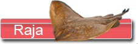
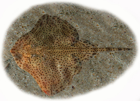
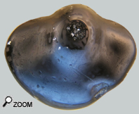

|
  |
|||
 |
|
|||
 La raie bouclée...  Raja est un genre qui est assez bien représenté dans la faune littorale actuelle européenne. Les raies bouclées préfèrent les eaux tempérées. De fait on les rencontre sur les hauts fonds en zone tempérée ou plus en profondeur sur les pentes des plateaux continentaux dans les zones tropicales, là où la température d'eau est plus fraîche. Dans les faluns, les Rajas sont beaucoup moins courantes que les raies pastenagues. On interprète cette rareté précisément à cause de leur préférence pour les eaux plus froides. C'est un argument de plus en faveur d'un climat subtropical du val de Loire au début du Miocène.La famille des rajidés est assez grande et comporte plusieurs genres. Ci-après quelques dents de cette famille de raies. La plus grosse : Raja Holsatica
Raja holsatica est une espèce qui présente des dents très trapues, solides et d’assez grande taille. Elles sont souvent retrouvées érodées à l’apex, ce qui laisse à penser que cette raie se nourrissait de proies à coquilles dures (Crustacés ou coquillages?).
Plus petite : Dipturus 
Compte tenu de la petite taille des dents elles ne sont pratiquement pas retrouvées. Mais la forme typique des dents antérieures permet un rapprochement avec le genre Dipturus, bien documenté au Miocène. Le nombre de dents retrouvées est si faible qu’il n’autorise pas à aller loin dans une tentative de détermination.
|
||||